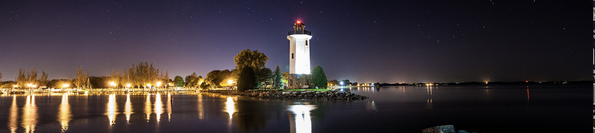

Robert Lynn Holdings owns, manages, and develops commercial and residential property in Fond du Lac, Wisconsin. We hold the keys to the spaces we lease — so you deal directly with the people responsible for them.

Robert Lynn Holdings is a locally owned and operated real estate company based in Fond du Lac, Wisconsin. We aren't a brokerage placing other people's listings — we own the buildings we lease, we manage them ourselves, and we have a long-term stake in keeping them right.
That ownership changes the experience. Tenants get straight answers on terms, faster decisions, and a landlord who's invested in the property for the long haul. Our anchor asset, Harbor View Plaza, sits on Winnebago Drive, with a residential portfolio spread across the city.
From retail and office space to single-family homes and duplexes, everything we lease is property we stand behind — maintained by people who live and work in the same community.
See what we do →
Owner · Operator"When you lease from us, you're talking to the owner — not a call center. That's the whole point."
Dustin founded Robert Lynn Holdings to own and operate real estate the way he believes it should be done: directly, locally, and for the long term. He oversees leasing, management, and development across the portfolio, and he's the person tenants actually reach when they call.
His focus is simple — buy and improve good property in Fond du Lac, take care of it, and give the businesses and families who use it a landlord who's genuinely invested in the community.
Get in touch →We own what we lease. Every space in our portfolio is property we bought, improved, or manage ourselves.
No runaround and no middleman. You deal with the owner directly, and you get answers on terms fast.
We hold property for the long haul, which means proactive maintenance and upkeep you can count on.
We reinvest in Fond du Lac — developing and caring for spaces that strengthen the local landscape.
Whether you're a business looking for the right location or a renter looking for a home, you'll reach the owner directly — no call center, no runaround.
Contact Robert Lynn Holdings →